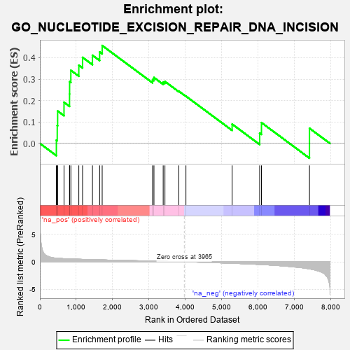
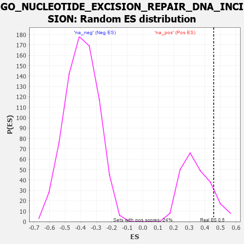

| | | Dataset | 7d |
| Phenotype | NoPhenotypeAvailable |
| Upregulated in class | na_pos |
| GeneSet | GO_NUCLEOTIDE_EXCISION_REPAIR_DNA_INCISION |
| Enrichment Score (ES) | 0.45661166 |
| Normalized Enrichment Score (NES) | 1.3330338 |
| Nominal p-value | 0.12288135 |
| FDR q-value | 0.39025036 |
| FWER p-Value | 1.0 |
Table: GSEA Results Summary

Fig 1: Enrichment plot: GO_NUCLEOTIDE_EXCISION_REPAIR_DNA_INCISION
Profile of the Running ES Score & Positions of GeneSet Members on the Rank Ordered List
| PROBE | GENE SYMBOL | GENE_TITLE | RANK IN GENE LIST | RANK METRIC SCORE | RUNNING ES | CORE ENRICHMENT | | 1 | ERCC1 | | | 453 | 0.660 | 0.0153 | Yes |
| 2 | FAN1 | | | 477 | 0.645 | 0.0829 | Yes |
| 3 | RFC2 | | | 488 | 0.635 | 0.1512 | Yes |
| 4 | RFC3 | | | 663 | 0.571 | 0.1918 | Yes |
| 5 | RFC4 | | | 815 | 0.528 | 0.2307 | Yes |
| 6 | RPA1 | | | 817 | 0.527 | 0.2882 | Yes |
| 7 | RPA2 | | | 851 | 0.519 | 0.3408 | Yes |
| 8 | XPA | | | 1070 | 0.469 | 0.3647 | Yes |
| 9 | ERCC3 | | | 1173 | 0.451 | 0.4012 | Yes |
| 10 | RBX1 | | | 1445 | 0.401 | 0.4111 | Yes |
| 11 | DDB1 | | | 1642 | 0.366 | 0.4265 | Yes |
| 12 | ERCC2 | | | 1712 | 0.354 | 0.4566 | Yes |
| 13 | CUL4A | | | 3097 | 0.137 | 0.2975 | No |
| 14 | OGG1 | | | 3135 | 0.132 | 0.3073 | No |
| 15 | RFC5 | | | 3389 | 0.091 | 0.2855 | No |
| 16 | RFC1 | | | 3437 | 0.085 | 0.2889 | No |
| 17 | CHD1L | | | 3819 | 0.024 | 0.2436 | No |
| 18 | PARP1 | | | 4014 | -0.010 | 0.2203 | No |
| 19 | ERCC5 | | | 5284 | -0.268 | 0.0900 | No |
| 20 | POLK | | | 6041 | -0.486 | 0.0481 | No |
| 21 | UBB | | | 6090 | -0.503 | 0.0971 | No |
| 22 | UBC | | | 7410 | -1.274 | 0.0706 | No |
Table: GSEA details [plain text format]

Fig 2: GO_NUCLEOTIDE_EXCISION_REPAIR_DNA_INCISION: Random ES distribution
Gene set null distribution of ES for GO_NUCLEOTIDE_EXCISION_REPAIR_DNA_INCISION